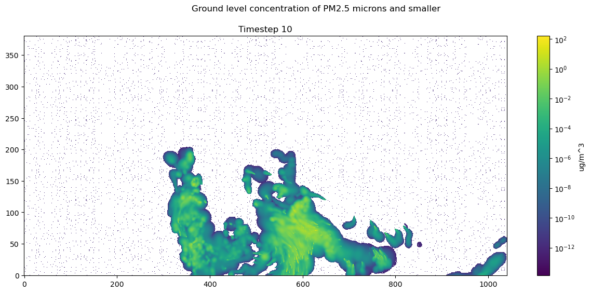
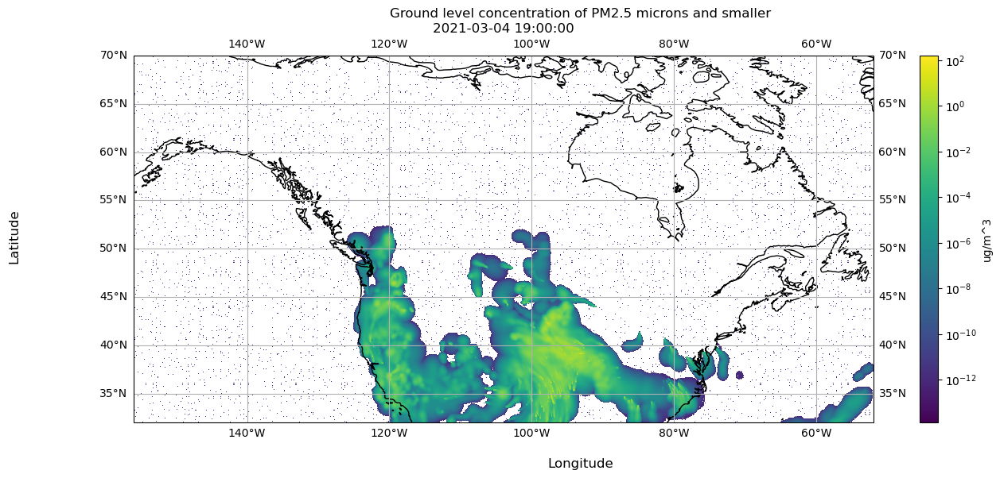

In this demo we load a different dispersion.nc file and explore how to visualize the data within the file.
8.0.0.1 Accessing the File
We use the forecast for March 4, 2021 where the weather forecast is initiated at 00:00:00 UTC and the smoke forecast is initialized at 08:00:00 UTC. You can download this file by navigating to the URL below.
Code
forecast_id ="BSC00CA12-01"yyyymmdd ="20210304"init_time ="08"url = (f"https://firesmoke.ca/forecasts/{forecast_id}/{yyyymmdd}{init_time}/dispersion.nc")print(f"Download this file from URL: {url}")# import urllib.request# urllib.request.urlretrieve(url, "dispersion.nc")
Download this file from URL: https://firesmoke.ca/forecasts/BSC00CA12-01/2021030408/dispersion.nc
8.0.0.1.1 Opening the File
We use xarray to open the NetCDF file and preview it.
Code
import xarray as xrds = xr.open_dataset("dispersion.nc")ds
Hysplit Concentration Model Output lat-lon coordinate system
HISTORY :
8.0.0.2 Using the Data
8.0.0.2.1 Accessing Arrays
The data we are interested in is the PM2.5 values. Let’s use xarray to get the array in the PM25 variable.
Code
ds["PM25"]
<xarray.DataArray 'PM25' (TSTEP: 51, LAY: 1, ROW: 381, COL: 1041)>
[20227671 values with dtype=float32]
Dimensions without coordinates: TSTEP, LAY, ROW, COL
Attributes:
long_name: PM25
units: ug/m^3
var_desc: PM25 ...
xarray.DataArray
'PM25'
TSTEP: 51
LAY: 1
ROW: 381
COL: 1041
...
[20227671 values with dtype=float32]
long_name :
PM25
units :
ug/m^3
var_desc :
PM25
The dimensions of the PM25 data array are composed of TSTEP, LAY, ROW, and COL. We do not need the LAY dimension, so let’s use numpy to drop it.
Code
import numpy as npds_pm25_vals = ds["PM25"].valuesprint(f'The shape of the data contained in PM25 variable is: {np.shape(ds_pm25_vals)}')ds_pm25_vals = np.squeeze(ds_pm25_vals)print(f'After squeezing, the shape is: {np.shape(ds_pm25_vals)}')
1
Use .values to get the four dimensional array.
2
Use np.squeeze to drop the LAY axis
The shape of the data contained in PM25 variable is: (51, 1, 381, 1041)
After squeezing, the shape is: (51, 381, 1041)
We now have ds_pm25_vals. Next, let’s select a time step and visualize the data.
8.0.0.2.2 Visualize Array in matplotlib
We can index time step 10 and use matplotlib to visualize the timestep
Index ds_pm25_vals at TSTEP = 10, selecting all ROWs and COLs.
2
Color PM25 values on a log scale, since values are small.
3
Ensure the aspect ratio of our plot fits all data, matplotlib can do this automatically.
4
Tell matplotlib our origin is the lower-left corner.
5
Select a colormap for our plot and draw the color bar on the right.
6
Create our plot using imshow.
7
Add a colorbar to our figure, based on the plot we just made above.
8
Set title of our figure.
9
Set title of our plot as the timestamp of our data.
10
Show the resulting visualization.

Notice there are no axis labels or metadata presented here. Next we will show how to use the metadata in dispersion.nc so the data is actually interpretable.
8.0.0.3 Incorporating Metadata to Visualization via Coordinates
8.0.0.3.1 Latitude and Longitude Coordinates
dispersion.nc includes attributes to generate the latitude and longitude values on the grid defined by NCOLS and NROWS. We use this grid to match each data point in the PM25 variable to a lat/lon coordinate.
Code
xorig = ds.XORIGyorig = ds.YORIGxcell = ds.XCELLycell = ds.YCELLncols = ds.NCOLSnrows = ds.NROWSlongitude = np.linspace(xorig, xorig + xcell * (ncols -1), ncols)latitude = np.linspace(yorig, yorig + ycell * (nrows -1), nrows)print("Size of longitude & latitude arrays:")print(f'np.size(longitude) = {np.size(longitude)}')print(f'np.size(latitude) = {np.size(latitude)}\n')print("Min & Max of longitude and latitude arrays:")print(f'longitude: min = {np.min(longitude)}, max = {np.max(longitude)}')print(f'latitude: min = {np.min(latitude)}, max = {np.max(latitude)}')
Size of longitude & latitude arrays:
np.size(longitude) = 1041
np.size(latitude) = 381
Min & Max of longitude and latitude arrays:
longitude: min = -156.0, max = -51.999998450279236
latitude: min = 32.0, max = 70.00000056624413
xarray allows us to create coordinates, which maps variable values to a value of our choice. In this case, we create coordinates mapping PM25 values to a latitude and longitude value.
Hysplit Concentration Model Output lat-lon coordinate system
HISTORY :
Now let’s move on to incorporating time stamp metadata.
8.0.0.3.2 Time Coordinates
Recall, there is a TFLAG variable in dispersion.nc.
Code
ds['TFLAG']
<xarray.DataArray 'TFLAG' (TSTEP: 51, VAR: 1, DATE-TIME: 2)>
[102 values with dtype=int32]
Dimensions without coordinates: TSTEP, VAR, DATE-TIME
Attributes:
units: <YYYYDDD,HHMMSS>
long_name: TFLAG
var_desc: Timestep-valid flags: (1) YYYYDDD or (2) HHMMSS ...
xarray.DataArray
'TFLAG'
TSTEP: 51
VAR: 1
DATE-TIME: 2
...
[102 values with dtype=int32]
units :
<YYYYDDD,HHMMSS>
long_name :
TFLAG
var_desc :
Timestep-valid flags: (1) YYYYDDD or (2) HHMMSS
The earliest and latest TFLAGs look like the following:
Code
print(f"Earliest available TFLAG is {ds['TFLAG'].values[0][0]}")print(f"Latest available TFLAG is {ds['TFLAG'].values[-1][0]}")
Earliest available TFLAG is [2021063 90000]
Latest available TFLAG is [2021065 110000]
This time flags require processing to be immediately legible. Let’s write a function to process the time flag accordingly. We use the datetime library.
Code
import datetimedef parse_tflag(tflag):""" Return the tflag as a datetime object :param list tflag: a list of two int32, the 1st representing date and 2nd representing time """ date =int(tflag[0]) year = date //1000 day_of_year = date %1000 final_date = datetime.datetime(year, 1, 1) + datetime.timedelta(days=day_of_year -1) time =int(tflag[1]) hours = time //10000 minutes = (time %10000) //100 seconds = time %100 full_datetime = datetime.datetime(year, final_date.month, final_date.day, hours, minutes, seconds)return full_datetime
1
Obtain year and day of year from tflag[0] (date).
2
Extract the year from the first 4 digits of tflag[0].
3
Extract the day of the year from the last 3 digits of tflag[0].
4
Create a datetime object representing the date.
5
Obtain hour, minutes, and seconds from tflag[1] (time).
6
Extract hours from the first 2 digits of tflag[1].
7
Extract minutes from the 3rd and 4th digits of tflag[1].
8
Extract seconds from the last 2 digits of tflag[1].
9
Create the final datetime object with the extracted date and time components.
Now we have datetime objects to represent the timeflag in a more legible and usable format.
Code
print(f"Earliest available TFLAG is {parse_tflag(ds['TFLAG'].values[0][0])}")print(f"Latest available TFLAG is {parse_tflag(ds['TFLAG'].values[-1][0])}")
Earliest available TFLAG is 2021-03-04 09:00:00
Latest available TFLAG is 2021-03-06 11:00:00
8.0.0.3.3 Visualize Array in matplotlib
Let’s visualize timestep 10 again, but now we can label the data using latitudes and longitudes, and the corresponding time flag.
Extract the PM2.5 data for the specified time step.
3
Parse the time flag for the specified time step.
4
Initialize a figure and plot with a specific projection.
5
Set the normalization for PM2.5 values to a logarithmic scale.
6
Define the extent of the plot based on the longitude and latitude range.
7
Set the aspect ratio of the plot to fit all data automatically.
8
Specify the origin of the plot as the lower-left corner.
9
Choose a colormap for the plot.
10
Create the plot using imshow with the specified parameters.
11
Draw coastlines on the plot.
12
Draw latitude and longitude lines with labels.
13
Add a colorbar to the figure based on the plot.
14
Set the x-axis label.
15
Set the y-axis label.
16
Set the title of the figure.
17
Set the title of the plot as the timestamp of the data.
18
Display the resulting visualization.

Code
ds.close()
Now that we understand how to load the data and metadata from the file and process it for visualization, let’s establish the data and metadata available to us across all NetCDF files.
Source Code
---format: html: code-links: - text: NetCDF Visualization Demo icon: file-code href: https://github.com/sci-visus/NSDF-WIRED/blob/main/communication/UBC%20Smoke%20Forecast%20Data%20Curation/data_notebooks/data_source/netcdf_demo.ipynb---### NetCDF Visualization Demo {#sec-netcdf-demo}{{< embed data_notebooks/data_source/netcdf_demo.ipynb echo=true >}}Now that we understand how to load the data and metadata from the file and process it for visualization, let's establish the data and metadata available to us across *all* NetCDF files.